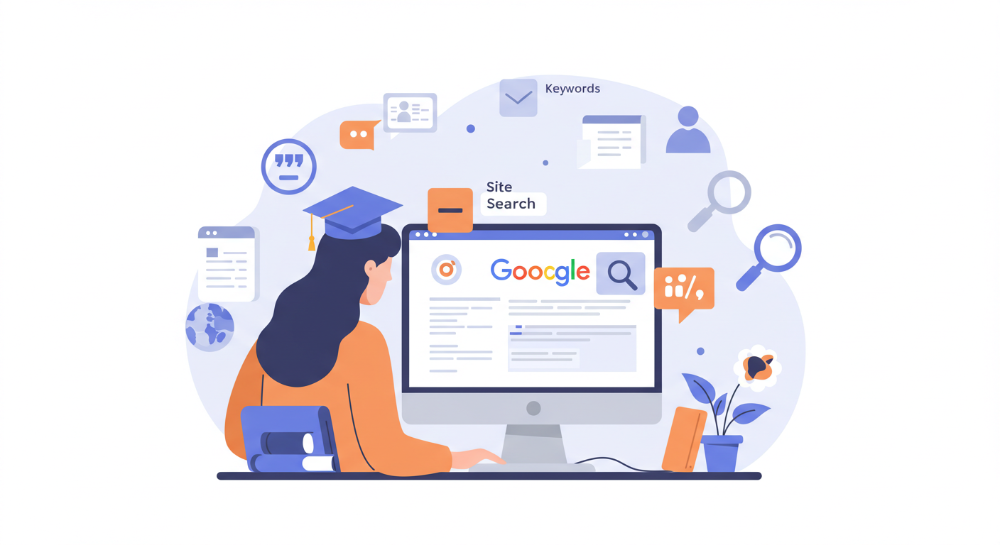

How to Search Smarter on Google?
Google is powerful—but only if you know how to use it well! In this module, we help students master smart search strategies to find trustworthy information faster and more effectively.
Anyone can type into a search bar, but smarter searching means better results. With the right tips and tricks, students can save time, avoid unreliable sources, and find what they really need.
- Use quotation marks (" ") to search for exact phrases. Example: "climate change facts".
- Add a minus sign (-) to exclude words. Example: jaguar -car (to find the animal, not the vehicle).
- Use site search to find info from trusted sources. Example: site:bbc.com climate change.
- Try keywords instead of full questions. Instead of “What are the effects of global warming?”, use global warming effects.
- Use the Tools button to filter results by date and region for up-to-date info.

To build strong research habits, students need to try out these strategies in real-time. This module includes fun, hands-on activities to sharpen their skills.
- Scavenger Hunt: Find five facts about an assigned topic using different search strategies.
- Keyword Remix: Start with a broad search term, then refine it using filters and advanced techniques.
- Search Showdown: Compare two search results—one using a basic query and the other using smarter tactics.
With smarter search skills, students can unlock the full power of Google—transforming the way they approach research, homework, and everyday questions. Rather than getting lost in a sea of results or falling for unreliable sources, students will learn how to ask the right questions, use targeted keywords, and apply special tricks like quotation marks, site-specific searches, and filters to narrow down the information they truly need.
They'll become digital detectives—able to find accurate, useful, and trustworthy answers faster than ever before. This module empowers them to take control of their online learning journey, think critically about what they find, and stay alert to misinformation and bias in the digital space. By the end, they’ll feel more confident navigating the internet and making smart, informed decisions about the information they choose to use and share.
Which of the following is the best way to check if an online source is reliable?
Clue: Check paragraph no1
Learn More
Resources for Students and Teachers
Explore these helpful links to improve your research and critical thinking skills:
- Common Sense Education – Digital literacy and citizenship resources.
- Khan Academy – Free lessons in a wide range of subjects.
- Fact Monster – Kid-friendly reference materials and tools.
- iCivics – Learning through interactive civics games and activities.